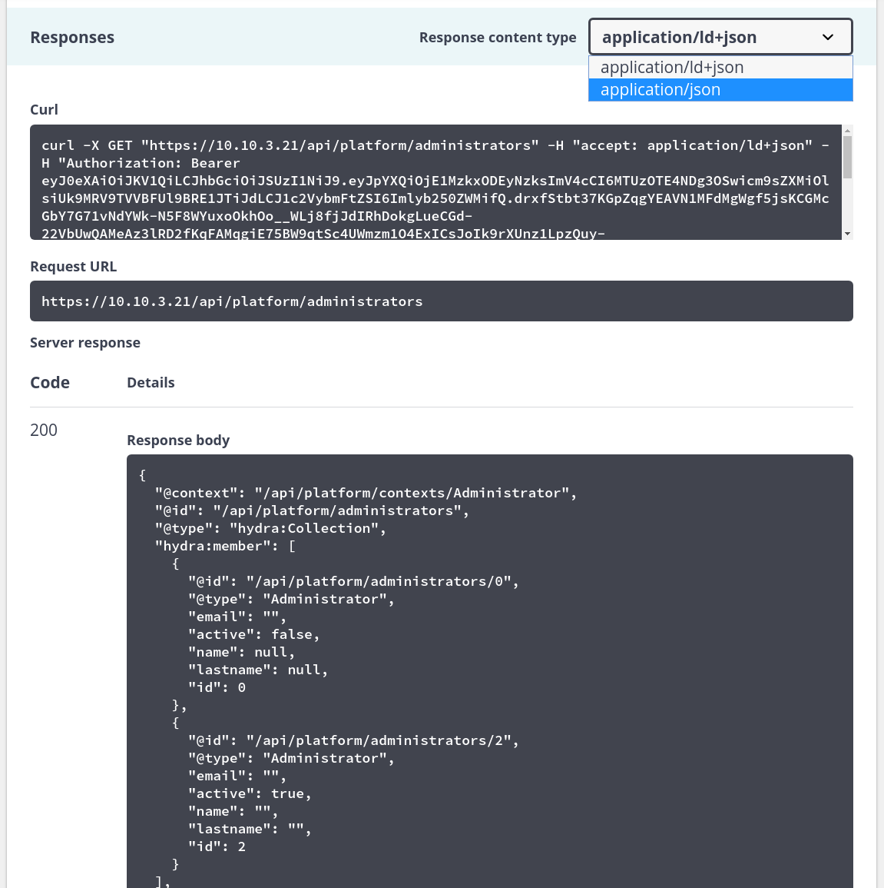

Cliente web incorporado¶
Las APIs vienen con su propio cliente web para que puedas probarlas fácilmente. Por ejemplo, ve a API de la Plataforma.

Necesitarás obtener un token de acceso con credenciales de administrador válidas antes de cualquier otra cosa. Puedes hacerlo desde la sección [Auth] > [POST /admin_login]. Haz clic en el botón Probar, ingresa tus credenciales y haz clic en ejecutar para enviar la solicitud. Deberías recibir una respuesta que contenga un token y un token de actualización.

Copia el token y configúralo en el botón Autorizar en la parte superior de la página. El ttl (tiempo de vida) del token es de una hora por defecto, puedes usar el token de actualización para obtener uno nuevo sin enviar las credenciales de administrador nuevamente.
Una vez que hayas configurado correctamente tu token, haz clic en el endpoint [GET /administrators], Probar y Ejecutar. También puedes cambiar el Tipo de contenido de la respuesta (JSON o LD+JSON para este endpoint).
Es posible filtrar y ordenar la respuesta usando los campos de entrada Parámetros también.
Especificación
Puedes consultar los modelos de solicitud y respuesta desde el propio cliente web.